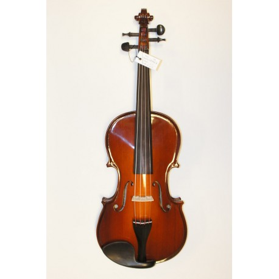

smuikas - Paslaugos.lt portalas Nr.1
2020.10.30 03:35
Prisijungti Reklamuoti paslaugas Prisijungti Reklamuoti paslaugas Gerindami Paslaugos.lt paslaugų kokybę naudojame slapukus. Naršydami toliau, jūs sutinkate su slapukais. Tai galite atšaukti, pakeisdami nustatymus. Plačiau privatumo politikoje . × Paslaugos.lt Paieška smuikas
Kategorijos atitinkančios paiešką:
Smuiko pamokossmuikas
rasta šiose kategorijose: Muzikantai, dainininkai, grupės (19) Muzikos mokytojai (7) Renginių vedėjai (1) Laidojimo paslaugos (1) Muzikantai, dainininkai, grupės (19) Muzikos mokytojai (7) Renginių vedėjai (1) Laidojimo paslaugos (1) Muzikantai, dainininkai, grupės (19) Muzikos mokytojai (7) Renginių vedėjai (1) Rodyti daugiau » Laidojimo paslaugos (1) Siųsk užklausą visiems Apdorota 86 433 užklausų. Gauk pasiūlymus, išsirink tinkamiausią. Vilnius (25) Kaunas (20) Alytus (18) Klaipėda (18) Panevėžys (18) Šiauliai (18) Trakų r. (21) Vilniaus r. (21) Jonavos r. (19) Kaišiadorių r. (19) Molėtų r. (19) Prienų r. (19) Šalčininkų r. (19) Širvintų r. (19) Švenčionių r. (19) Ukmergės r. (19) Utenos r. (19) Varėnos r. (19) Birštonas (19) Elektrėnų sav. (19) Alytaus r. (18) Anykščių r. (18) Biržų r. (18) Ignalinos r. (18) Joniškio r. (18) Jurbarko r. (18) Kauno r. (18) Kėdainių r. (18) Kelmės r. (18) Klaipėdos r. (18) Kretingos r. (18) Kupiškio r. (18) Lazdijų r. (18) Pakruojo r. (18) Panevėžio r. (18) Pasvalio r. (18) Plungės r. (18) Radviliškio r. (18) Raseinių r. (18) Rokiškio r. (18) Šakių r. (18) Šiaulių r. (18) Šilalės r. (18) Šilutės r. (18) Tauragės r. (18) Telšių r. (18) Vilkaviškio r. (18) Zarasų r. (18) Kalvarija (18) Kazlų Rūda (18) Marijampolė (18) Pagėgiai (18) Palanga (18) Rietavas (18) Druskininkų sav. (18) Akmenės r. (17) Mažeikių r. (17) Skuodo r. (17) Visaginas (17) Neringos sav. (17) Filtrai Kategorijos Muzikos mokytojai 1 vakar 20 €/h 3 1 rekomendacija 6 m. patirtisSmuiko mokytoja (yra galimybė mokytis online)
Galiu padėti išmokti groti SMUIKU, pasiruošti smuiko pamokoms muzikos mokyklai. Taip,pat su savo pianiste galime pagroti Jūsų šventėje! :)
Ulijona Pugačiukaitė Vilnius Muzikantai, dainininkai, grupės -10% prieš 4 d. 60 €/h 6 0 rekomendacijų 10 m. patirtisSmuiko melodijos Jūsų šventei
Elegancija, profesionalumas, nuoširdumas-visa tai dovanoju Jums ir Jūsų draugams smuiko ir mano-Mildos duo!
Muzikantai Kaunas , visa Lietuva Muzikos mokytojai vakar 10 €/h 6 0 rekomendacijųSmuiko ir alto pamokos
Mokau groti smuiku ir altu. Mokau tiek pradedančiuosius tiek pažengusius. Galiu paruošti ikimokyklinukus stojamiesiems egzaminams į muzikos mokyklas.
Vita Paulauskienė Vilnius Muzikos mokytojai vakar € 1 0 rekomendacijųFortepijono, smuiko , solfedžio pamokos
Fortepijono, smuiko, solfedžio pamokos
Jonas Klaipėda , +30 km aplink Muzikos mokytojai -10% vakar 30 €/h 7 1 rekomendacija 28 m. patirtisMuzikos pamokos
Profesionalios smuiko pamokos Vilniuje.
Ilona Girdžiūnaitė Vilnius Muzikos mokytojai prieš 2 d. 15 €/h 25 0 rekomendacijų 13 m. patirtisAš myliu muziką - fortepijono ir smuiko pamokos
Fortepijono/pianino ir smuiko pamokos suaugusiems ir vaikams.
Eglė Staišiūnienė Vilnius , +30 km aplink Muzikantai, dainininkai, grupės 2020-10-01 150 €/h 14 0 rekomendacijų 11 m. patirtisArfos ir smuiko /gitaros duetas
Arfos ir smuiko/gitaros dueto garsai bažnyčioje, gamtoje, laive, puotos salėje arba dvare, savo turtingais garsais bei prabangia forma tinkamai papuoš Jūsų šventę.
Dailė Klaipėda , visa Lietuva Muzikantai, dainininkai, grupės prieš 3 d. 100 €/h 39 4 rekomendacijos 21 m. patirtisMuzikantai Vilniuje ir visoje Lietuvoje
Daugiau nei 20 metų patirtis grojant prezentacijose, renginiuose ir privačiose šventėse.
Gintaras Vilnius , visa Lietuva Renginių vedėjai -10% vakar 200 € 39 30 rekomendacijų 5 m. patirtisRenginių vedėjas Laimis (Lt / En kalbomis)
Esu renginių vedėjas ir prof. atlikėjas ( smuikas ) Laimis. Jeigu norite išskirtinės, šiuolaikiškos, elegantiškos šventės, parašykite man 😉
Laimis Krunglevičius Kaunas , visa Lietuva Muzikantai, dainininkai, grupės -10% prieš 2 d. 70 €/h 20 17 rekomendacijų 10 m. patirtisŠventės vedėjai, atlikėjai bei Dj "Pašėlęs Mikrofonas"
būtų originali ir nepamirštama galime Jums pasiūlyti: * Gyvai dainuojančių vedėjų duetą su smuikininkės paslaugomis * Renginio vedėjus * Gyvą foninę smuiko
Edvardas Jucius Vilnius , visa Lietuva Muzikantai, dainininkai, grupės vakar 100 €/h 16 0 rekomendacijų 4 m. patirtisAnatrio muzikantai
Mes esame smuiko , saksofono ir fleitos trio iš Klaipėdos.🎶 Dažniausiai koncertuoja šiuo metu tik saksofono ir smuiko duetas, bet pagal jūsų norą galime
Natalija Vos Klaipėda , visa Lietuva Muzikantai, dainininkai, grupės -10% 2020-09-24 120 €/h 13 3 rekomendacijos 11 m. patirtisCelloSound
Dviejų violončelių duetas
Ana Kaunas , visa Lietuva Muzikantai, dainininkai, grupės 2019-12-18 € 3 0 rekomendacijųSmuiko muzika.
Tomas Kaunas Muzikos mokytojai vakar € 8 0 rekomendacijų
Invidualios smuiko bei ukuleles pamokos
Vaicekauskas P. Vilnius Muzikantai, dainininkai, grupės 2020-01-06 € 2 0 rekomendacijų
Smuiko melodijos įvairioms progoms
Klementina B. Kaunas , visa Lietuva Muzikantai, dainininkai, grupės 2020-10-05 € 3 0 rekomendacijų
Smuiko skambesys Jūsų gyvenimo akimirkoms!
Michailas Kaunas Muzikantai, dainininkai, grupės -10% prieš 7 d. 400 €/h 18 0 rekomendacijų 16 m. patirtis
Unikalūs Dj ir elektrinio smuiko pasirodymai
Mes galime Jūsų šventei ar renginiui suteikti unikalumo ir išskirtinumo
Donatas S. Vilnius , visa Lietuva Muzikos mokytojai prieš 2 d. 15 €/h 4 2 rekomendacijos 4 m. patirtisIndividualios smuiko ir vokalo pamokos
Būčiau laiminga galėdama pasidalinti savo muzikinėmis žiniomis su bet kokio amžiaus žmonėmis!
Martyna D. Vilnius , +30 km aplink Muzikantai, dainininkai, grupės -10% prieš 2 d. 250 €/h 18 2 rekomendacijos 11 m. patirtisProginiai Styginių instrumentų ansambliai
2-4 atlikėjų styginių ansamblis puikiai tiks palaikyti estetišką bei šiltą atmosferą šventės pradžioje arba leis publikai atsipalaiduoti ir pasimėgauti "Muzikos terapija" renginiui jau įsibėgėjus.
Tomas Mikalauskas Klaipėda , visa Lietuva Muzikantai, dainininkai, grupės prieš 8 d. 400 €/h 19 0 rekomendacijų 15 m. patirtisStyginių kvartetas Archi Quartett
Ceremonijoms jaukiose erdvėse su nedideliu svečių skaičiumi puikiai tiks ir styginių duetas – smuikas ir violončelė arba smuikas ir altas.
Styginių k. Vilnius , visa Lietuva 1 2 Toliau Populiariausi miestai Vilnius (25) Kaunas (20) Alytus (18) Klaipėda (18) Panevėžys (18) Šiauliai (18) D.U.K. Taisyklės Privatumo politika Apie mus Blogas Kontaktai Facebook Instagram Struktūra Kategorijos Paslaugų teikėjams Klausk profesionalųCopyright © UAB „Diginet LTU“, 2012-2020. Visos teisės saugomos.
D I G I N E T Aruodas.lt Autoplius.lt Cvbankas.lt Kainos.lt NTzemelapis.lt Paslaugos.lt Skelbiu.lt- smuikas - išsamiai DELFI.lt
- Smuikas – RUDAMINOS MENO MOKYKLA
- Smuikas Strunal 160 4/4 | Tamsta - Muzikos prekių parduotuvė
- Menų studija „Žaismas“ » Smuikas
- Smuikas - Life is music
- Smuikas - Cantores David
- Smuikas – ELIP (Enciklopedija Lietuvai ir pasauliui)
- Smuikas "VIVENTE" - MUSICstudio
- smuikas - Paslaugos.lt portalas Nr.1
- Smuikas – Pažink instrumentus!
- smuikas - išsamiai DELFI.lt
Smuikas, kas tai? Tai, – styginis instrumentas turintis keturias stygas, suderintas kvintomis*. Jis yra pats mažiausias ir aukščiausiai suderintas instrumentas, priklausantis smuiko šeimai. Smuiko istorija - pirmą kart smuikas pasirodė šiaurės Italijoje ankstyvame XIVa. Manoma, kad pirmieji smuikų gamintojai sudėjo tris skirtingus to meto muzikinių instrumentų tipus: senovinį ...
- Smuikas – RUDAMINOS MENO MOKYKLA
Smuikas – styginis instrumentas turintis keturias stygas, suderintas kvintomis.Žemiausia styga yra G („sol“). Tai yra pats mažiausias ir aukščiausiai suderintas instrumentas, priklausantis smuiko šeimai. Šiai šeimai taip pat priklauso violončelė ir altas.Panašus gaubtas styginis kontrabosas praktiškai priklauso tai pačiai, bet šiek tiek atskirai violų šeimai.
- Smuikas Strunal 160 4/4 | Tamsta - Muzikos prekių parduotuvė
Smuikas tai styginis instrumentas dažiausiai turintis keturias stygas ir grojamas su stryku. Smuikai gali būti įvairių dydžių nuo 4/4 iki 1/64. Tai reiškia, kad kuo didesnis dydžio vardiklis tuo mažesnis bus smuikas. 4/4 dydžio smuikas dar vadinamas pilno dydžio smuiku. Šis smuikas skirtas suaugusiems.
- Menų studija „Žaismas“ » Smuikas
Smuikas – styginis instrumentas turintis keturias stygas, suderintas kvintomis. 90 santykiai.
- Smuikas - Life is music
Smuikas (pasiklausykite) – styginis instrumentas, kuris ankstyvajame XVI a. pasirodė šiaurės Italijoje. Tai pats mažiausias ir aukščiausiai suderintas instrumentas, priklausantis smuiko šeimai. Šiai šeimai taip pat priklauso violončelė ir altas.
- Smuikas - Cantores David
Taigi šio darbo objektas – smuikas lietuvių liaudies kultūroje. Tikslai: aprašyti, kokie buvę pirmieji smuikai, kaip, kur ir iš ko gaminami, kokiose vietovėse ir kokiu laikotarpiu naudojami, kokie papročiai apipynę grojimą smuiku.
- Smuikas – ELIP (Enciklopedija Lietuvai ir pasauliui)
Raskite paslaugas pagal raktažodį smuikas visoje Lietuvoje. Darbų pavyzdžiai, paslaugų kainos, rekomendacijos.
- Smuikas "VIVENTE" - MUSICstudio
muzika, smuikas, Groti smuiku, mergina smuikas, Klasikinė muzika, klasikinis, žaisti; 2202x1468px
- smuikas - Paslaugos.lt portalas Nr.1
Smuikas "HIDERSINE" Klevo mediena (light flamed maple) 220.00€ Dydis:
- Smuikas – Pažink instrumentus!
Smuikas – styginis instrumentas turintis keturias stygas, suderintas kvintomis. Smuikas pasirodė šiaurės Italijoje ankstyvame XIV a. Manoma, kad pirmieji smuikų gamintojai sudėjo tris skirtingus to meto muzikinių instrumentų tipus: senovinį tristygį smuiką, Renesanso fidelį ir lyrą.
Smuikas, kas tai? Tai, – styginis instrumentas turintis keturias stygas, suderintas kvintomis*. Jis yra pats mažiausias ir aukščiausiai suderintas instrumentas, priklausantis smuiko šeimai. Smuiko istorija - pirmą kart smuikas pasirodė šiaurės Italijoje ankstyvame XIVa. Manoma, kad pirmieji smuikų gamintojai sudėjo tris skirtingus to meto muzikinių instrumentų tipus: senovinį ...
Smuikas – styginis instrumentas turintis keturias stygas, suderintas kvintomis.Žemiausia styga yra G („sol“). Tai yra pats mažiausias ir aukščiausiai suderintas instrumentas, priklausantis smuiko šeimai. Šiai šeimai taip pat priklauso violončelė ir altas.Panašus gaubtas styginis kontrabosas praktiškai priklauso tai pačiai, bet šiek tiek atskirai violų šeimai.
Smuikas tai styginis instrumentas dažiausiai turintis keturias stygas ir grojamas su stryku. Smuikai gali būti įvairių dydžių nuo 4/4 iki 1/64. Tai reiškia, kad kuo didesnis dydžio vardiklis tuo mažesnis bus smuikas. 4/4 dydžio smuikas dar vadinamas pilno dydžio smuiku. Šis smuikas skirtas suaugusiems.
Smuikas – styginis instrumentas turintis keturias stygas, suderintas kvintomis. 90 santykiai.
Smuikas (pasiklausykite) – styginis instrumentas, kuris ankstyvajame XVI a. pasirodė šiaurės Italijoje. Tai pats mažiausias ir aukščiausiai suderintas instrumentas, priklausantis smuiko šeimai. Šiai šeimai taip pat priklauso violončelė ir altas.
Taigi šio darbo objektas – smuikas lietuvių liaudies kultūroje. Tikslai: aprašyti, kokie buvę pirmieji smuikai, kaip, kur ir iš ko gaminami, kokiose vietovėse ir kokiu laikotarpiu naudojami, kokie papročiai apipynę grojimą smuiku.
Raskite paslaugas pagal raktažodį smuikas visoje Lietuvoje. Darbų pavyzdžiai, paslaugų kainos, rekomendacijos.
muzika, smuikas, Groti smuiku, mergina smuikas, Klasikinė muzika, klasikinis, žaisti; 2202x1468px
Smuikas "HIDERSINE" Klevo mediena (light flamed maple) 220.00€ Dydis:
Smuikas – styginis instrumentas turintis keturias stygas, suderintas kvintomis. Smuikas pasirodė šiaurės Italijoje ankstyvame XIV a. Manoma, kad pirmieji smuikų gamintojai sudėjo tris skirtingus to meto muzikinių instrumentų tipus: senovinį tristygį smuiką, Renesanso fidelį ir lyrą.
